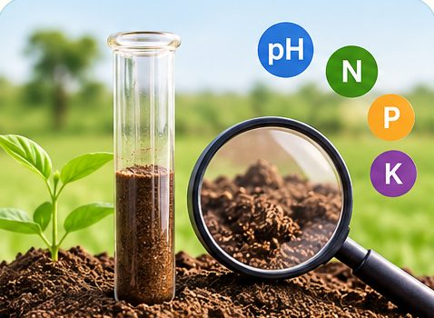
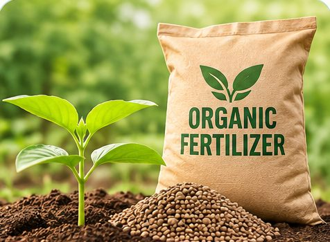

Share your soil details
Tell us about your soil, crop and farm location.
DATA-DRIVEN AGRICULTURE
Soil testing, crop guidance, and practical agriculture support for farmers.
HOW IT WORKS
Tell us about your soil, crop and farm location.
Our team reviews your needs and recommends next steps.
Get local help through your crop cycle.
OUR SERVICES

ಮಣ್ಣಿನ ವಿಶ್ಲೇಷಣೆ
Understand your soil health and nutrient levels.
ಬೆಳೆ ಶಿಫಾರಸು
Find crops suited to your soil and local conditions.

ಗೊಬ್ಬರ ಸಲಹೆ
Use balanced nutrients for healthy growth.
SAMPLE SOIL REPORT
A clear report helps you understand soil condition and plan the next steps for your crop.
Ask about soil testing →NitrogenGood
PhosphorusMedium
PotassiumGood
ORGANIC INPUTS
Browse available products. Ask us on WhatsApp about delivery and recommendations.
COMMON QUESTIONS
Send us your location and we will explain the available testing options.
Yes. Share your crop and soil details so we can guide you.
Contact us with your PIN code to check current delivery coverage.
CONTACT SOILIXA
Share your question and we’ll get back to you.